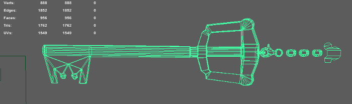
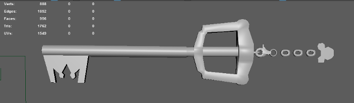
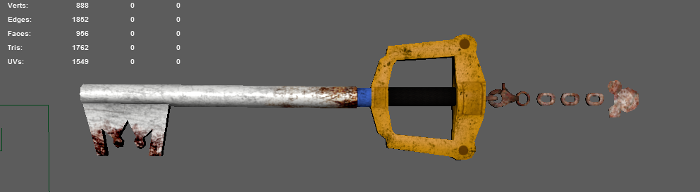
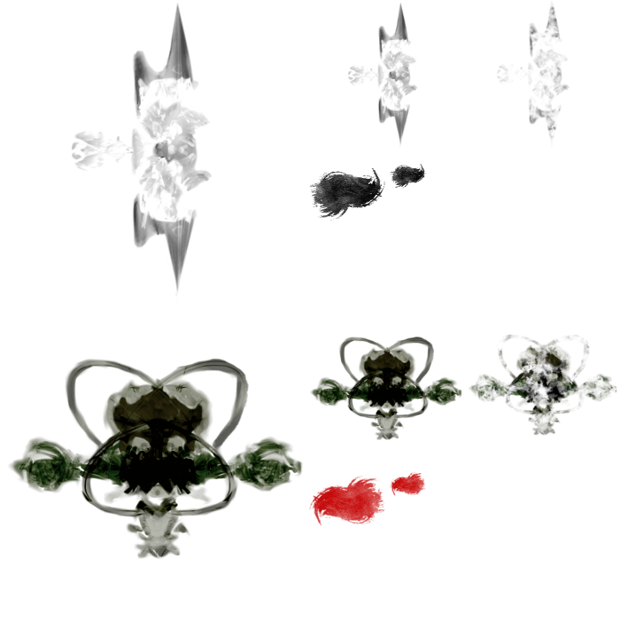
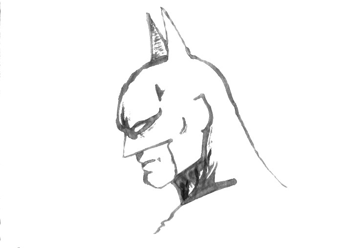
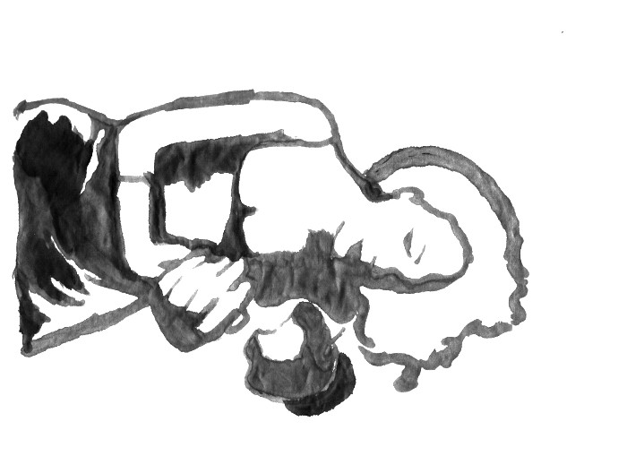
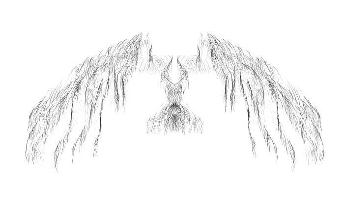
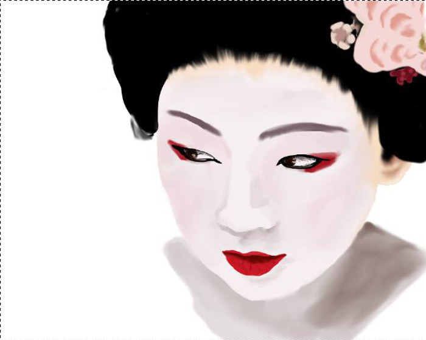

Artwork and Assets
A collection of the 3d assets that I have made, for class projects and games.



A 'gritty reboot' Kingdom Key ( from Kingdom Hearts ) made from reference for 3D Animation and Asset production. Modeled, unwrapped, textured, and rigged by me.
A collection of the 2d assets that I have made, for class projects and games.

A spritesheet made for my 2D Animation and Asset Production class.
Some of the stuff I've made with no computer involved, not necessarily for games.


Ink and brush sketches, to get a better idea of the watercolor style for a game.
Some of the stuff I've made just playing around in drawing software.

